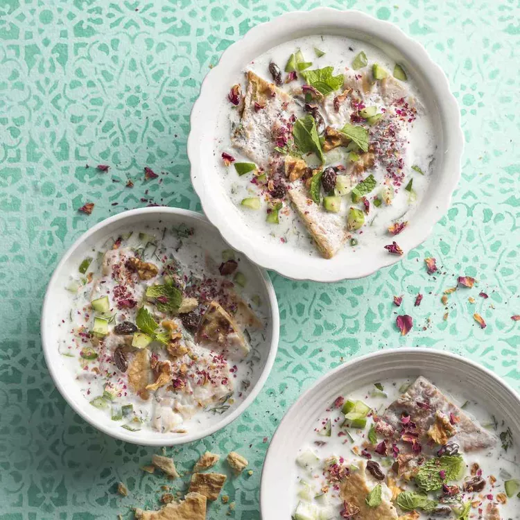

Abdoogh

This refreshing soup, made with cooling ingredients and served icy cold, is the perfect light lunch on a hot day. I enjoy it all summer-and I always have the best naps after eating it.
You can make the yogurt mixture ahead and keep it in the fridge and just dish out a bowl whenever you like. Though optional, the rose petals make it pretty and quintessentially Persian. You can usually find food-safe dried rose petals in Middle Eastern supermarkets.
ingredients
- 2 cups Greek-style yogurt
- 1 teaspoon salt
- 2 teaspoons crushed dried mint
- 2 cups cold water, or more as needed
- 2 Persian cucumbers, diced
- ¼ cup raisins
- ¼ cup chopped walnuts
- ½ cup chopped fresh mint
- ½ cup chopped fresh parsley
- 2 teaspoons ground dried Persian rose petals (Optional)
- ice cubes
- 2 pita bread rounds, or to taste
Steps
-
Puree yogurt, salt, and dried mint in a blender with enough of the water to create a smooth, thin soup. It will thicken some when you add the bread.
Divide the cucumbers, raisins, walnuts, and herbs among four bowls.
- Pour one-fourth of the yogurt mixture into each bowl.
- Top with rose petals, and add a few ice cubes to each bowl.
- Tear bread into small pieces and add some to each bowl. Let bread soak 5 to 7 minutes before serving. Serve cold.